Estudio de Factibilidad
Estudio de Factibilidad
Concepto del proyecto
Concepto del proyecto
- Proyecto piloto en la FIM para luego vender la plataforma a otras facultades ó universidades.
- Realizar una matrícula y prematrícula online.
- La actualización automática: ver en tiempo real nivel de alumnos en salones.
- Prematrícula: análisis estadístico para abrir secciones.
- La matrícula debe cargar los datos de la prematrícula para poder ser editarlo antes del turno respectivo de matrícula.
- El resultado de la prematricula debe mostrar al alumno el puesto dentro de las vacantes que está ocupando y que probablemente ocupará dentro de matrícula.
- Asitencia y publicacion de notas.
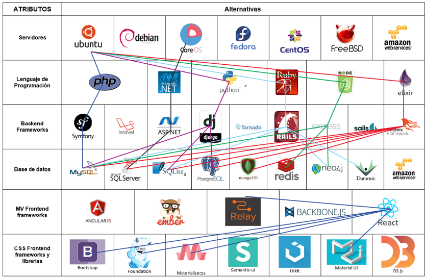
Analisis Fisico
Analisis Fisico
Entes Involucrados:
| Grupos | PROBLEMAS PERCIBIDOS |
|---|---|
| Autoridades | Riesgo e incertidumbre en la toma de decisiones. |
| Docentes | Deficientes herramientas de seguimiento y control de los estudiantes. |
| Estudiantes | Deficientes herramientas tecnológicas para el acceso a los servicios que presta la universidad. |
| Administrativos | Deficientes herramientas para el acceso a los datos de apoyo a la gestión educativa. |
Analisis Ambiental (Matriz de Leopold)
Analisis Ambiental (Matriz de Leopold)
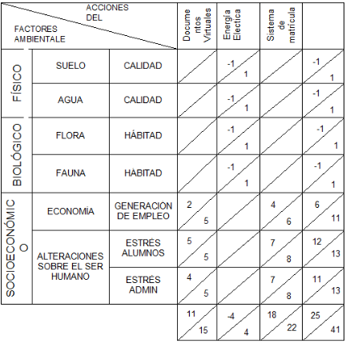
Analisis Economico (Economia Liquida)
Analisis Economico (Economia Liquida)
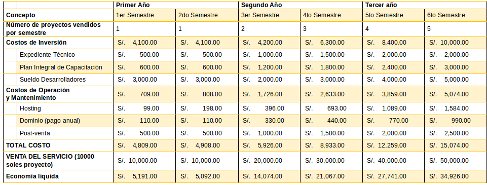
Analisis Economico (Recursos Propios)
Analisis Economico (Recursos Propios)

Conclusiones
Conclusiones
- El mejoramiento e implementación del sistema de matrícula, representa una oportunidad de ofrecer un mejor servicio a los estudiantes, disminuyendo su nivel de estrés para realizar sus estudios con normalidad y sin inconvenientes.
- Si bien se demuestra que el proyecto es rentable economicamente, en el primer año aun no se recupera la inversion hecha en programadores. Pero si aplicamos
DIY: Do It Yoursel: los 3000 soles que estan dentro del costo seria de autopago. - No existen impedimentos de tipo técnico para la ejecución del proyecto.
Proyecto Preliminar
Proyecto Preliminar
Elección dentro de mapa morfologico
Elección dentro de mapa morfologico
Elixir:
- Espacio en ram por proceso: 1-1.5kb
- Velocidad de respuesta: 3ms en promedio
Postgresql:
- Hasta 350.000 consultas de lectura por segundo.
- Hasta 14.000 escrituras de datos por segundo.
- Para efectos prácticos tomamos el menor por consulta: 14.000 request/s
Modelamiento Matematico
Modelamiento Matematico
| Descripción | Requests http | Request db | Suscribe websockets | Recibir Ws |
|---|---|---|---|---|
| Login y logout | 2 | 2 | 0 | 0 |
| Mostrar cursos, secciones y capacidad disponible | 1 | 2 | 0 | 0 |
| Matricula a un curso x Número de cursos | 2 | 7 | 0 | 0 |
| Confirmar matrícula | 7 | 1 | 0 | 0 |
| Tiempo real secciones (7 cursos suscritos x 3 secciones por curso x 25 número de vacantes/sección=525) | 0 | 0 | 7 | 525 |
| Total x alumno | 11 | 12 | 7 | 525 |
- Número de alumnos x entidad (FIM, FIC ó toda la UNI): X
- Número de turnos (lapso de media hora de vigencia): 20
- Número de alumnos por turno: X/20
- Total por turno=“Total x alumno”* “Número de alumnos por turno”:
| Descripción | Requests http | Request db | Suscribe websockets | Recibir Ws |
|---|---|---|---|---|
| Total x alumno | 11 | 12 | 7 | 525 |
| Total por turno (media hora) | 0.55*X | 0.6*X | 0.35*X | 26.25*X |
| Total / segundo (asumiendo mayor demanda en los 10 primeros minutos) | 0.000916667*X | 0.001*X | 0.00058333*X | 0.04375*X |
- Espacio en RAM ocupada: 1.5kb*X
- RAM del servidor (512MB ó 1024MB ó 2048MB): Y [MB]
- Transferencia del servidor (1TB ó 2TB ó 3TB): Z [MB]
Ecuaciones:
- Uso de memoria RAM no debe superar el espacio disponible:
- 1.5*X[Kb]<Y*1024[Kb]
- Transferencia de datos (Número de alumnos*HttpTotalxalumno*Tamaño de data por http request[50Kb]):
- X*(11)*50[Kb]<Z*1024*1024[Kb]
Resumiendo:
- Número de alumnos x entidad (FIM, FIC ó toda la UNI): X
- RAM del servidor (512MB ó 1024MB ó 2048MB): Y [MB]
- Transferencia del servidor (1TB ó 2TB ó 3TB): Z [MB]
- X<Y*682
- X<23831.27*Z
Analisis de Compatibilidad
Analisis de Compatibilidad
Plan Basico del servidor:
- RAM: Y=512[MB]
- TRANSFERENCIA: Z=1[TB]
Requerimientos:
- Alumnos en la UNI: X=11124
En las ecuaciones:
- 11124<512*682.6
- 11124<23831.27
Conclusiones:
- 11124<349491.2
- 11.124<23831.27
El sistema creado es compatible con el valor típico de alumnos de toda la universidad. Esto significa que se podria manejar la matricula de todos los alumnos de la UNI en un solo dia si asi se quisiese.
Limite de numero de alumnos en el plan basico del servidor
Limite de numero de alumnos en el plan basico del servidor
Determinamos el numero maximo de alumnos que el servidor puede soportar segun las ecuaciones:
- RAM: Y=512[MB]
- TRANSFERENCIA: Z=1[TB]
- X<512*682.6
- X<349491.2
- X<23831.27*1
- X<23831.27
- X<512*682.6
Por lo tanto el numero maximo de alumnos que podria manejar nuestra aplicaciones es: 23831.27
Prediccion de Comportamiento
Prediccion de Comportamiento
Ajuste de curva del numero de alumnos vs tiempo de los ultimos 5 años:
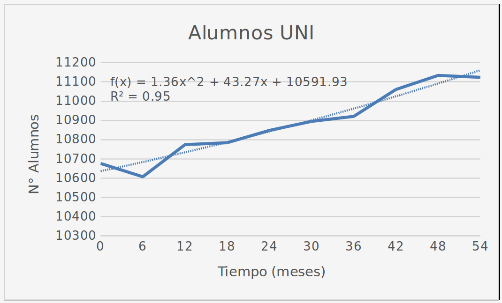
Determinando el valor de t para que el sistema llegue a su limite:
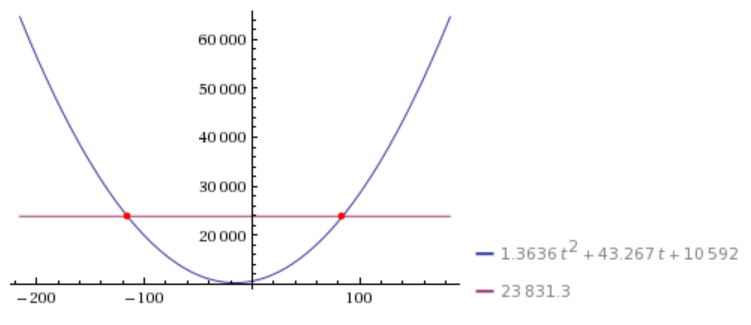
83.9386 meses = 7 años
Conclusiones
Conclusiones
- La plataforma funcionaria en un servidor de 5 dolares mensuales. Al cabo de 7 años, donde se preeve que los alumnos alcancen su numero de maximo permisible, el servidor puede repotenciarse al doble de sus capacidades a un pago mensual de 10 dolares.
- Al repotenciarse al doble de su capacidad se extenderia su vida util 7 años más.
Proyecto Detallado
Proyecto Detallado
Descripción de Subsistemas
Descripción de Subsistemas
| Subsistemas | Detalle |
|---|---|
| Subsistema de Alumnos | Permitirá realizar el registro y administración de la información de los alumnos. |
| Subsistema de Malla Curricular | Permitirá registrar y administrar la información de los cursos por cada especialidad. |
| Subsistema de Plana Docente | Permitirá registrar y administrar la información de los docentes. |
| Subsistema de planta física (Ambientes) | Permitirá registrar y administrar la información de todos los ambientes físicos con los que se cuenta para el dictado de las clases. |
| Subsistema de programación académica (Horarios) | Permitirá registrar y administrar la información de los horarios de clases de cada sección por ciclo. |
| Subsistema de matrícula | Permitirá registrar las matrículas, retiros, reinscripciones de los estudiantes. |
| Subsistema de asistencia | Permitirá tomar asistencia de Alumnos y Docentes. |
| Subsistema de notas | Permitirá publicar notas según sistema de evaluación de cada curso. |
Descripción de Componentes:
Descripción de Componentes:
Subsistema de Alumnos:
| Componentes | Detalle |
|---|---|
| Componente Registro de Alumnos | Registro de nuevos alumnos en cada especialidad. |
| Componente Actualizacion de Alumnos | El alumno podrá actualizar sus datos personales. |
| Componente de Ficha Académica | El alumno podrá ver la ficha Académica de cada uno de los ciclos que curso. |
| Componente de Horario | El alumno podrá verificar su matrícula y horario del ciclo actual. |
| Componente de Reporte de Asistencia | El alumno podrá verificar su asistencia diaria. |
| Componente de Avance Curricular | El alumno podrá ver el plan de estudios de su especialidad remarcando los cursos llevados y los que faltan por terminar. |
| Componente de Notas a la fecha | El alumno podrá ver las notas publicadas de cada curso según el sistema de evaluación. |
Subsistema de Malla Curricular:
| Componentes | Detalle |
|---|---|
| Componente de Cursos | Registro y edición de nuevos cursos junto con su creditaje por especialidad. |
Subsistema de Plana Docente:
| Componentes | Detalle |
|---|---|
| Componente de Docentes | Registro y actualización de datos de Docentes. |
Subsistema de planta física:
| Componentes | Detalle |
|---|---|
| Componente de Planta Física | Registro y actualización de estado e información de ambientes destinados al dictado de clases. |
Subsistema de programación académica:
| Componentes | Detalle |
|---|---|
| Componente de Cursos en periodo academico | Registra nuevo periodo academico junto con los cursos dictados. |
| Componente de Registro de Secciones | Registro de secciones de cada curso dictado en el periodo academico. |
| Componente de Registro de Horarios | Registro de Horarios de cada seccion. Abarca información sobre tipo de horario de clase (teoría, práctica ó laboratorio) y docentes a cargo. |
| Componente de publicación de matricula | Publicación de fecha de prematricula y matrícula. La fecha matrícula deberá ser de 15 días de anticipación según reglamento. |
Subsistema de matrícula:
| Componentes | Detalle |
|---|---|
| Componente de Pre-matricula | Registro de pre-matricula. |
| Componente de Reporte y Análisis de Pre-matricula | Reporta la pre-matricula. Brinda un informe sobre que cursos necesitan ser aperturados por demanda de vacantes. |
| Componente de Matricula | Matrícula de alumnos en según turno. El alumno podrá armar su horario antes de que inicie su turno pero solo podrá confirmar su matricula en este turno. |
| Componente de Aviso en Tiempo Real de las vacantes durante Matricula | El alumno podrá suscribirse a reportes en tiempo real del número de vacantes disponibles en secciones que este elija. |
Subsistema de asistencia:
| Componentes | Detalle |
|---|---|
| Componente de Registro de Asistencia | Registro de asistencia Docente y Alumno. |
Subsistema de notas:
| Componentes | Detalle |
|---|---|
| Componente de Registro de Notas | Permitirá publicar notas según sistema de evaluación de cada curso. |
| Componente de estado de Curso | Se comunicara al alumno mediante correo el estado final del cursos llevado en el ciclo, esto cuando se publique la ultima nota requerida para saber este estado. |
Descripción de Partes:
Descripción de Partes:
Todos los componentes tendrán 3 partes básicas que forman su arquitectura:
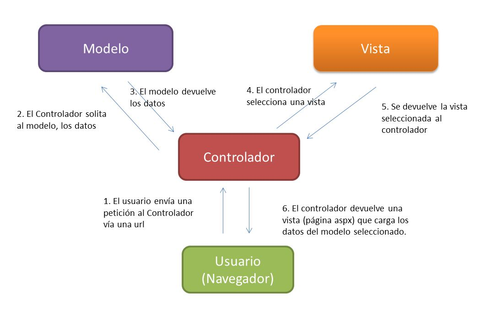
Conceptos en el modelo
Conceptos en el modelo
- Representacion de basica de información:
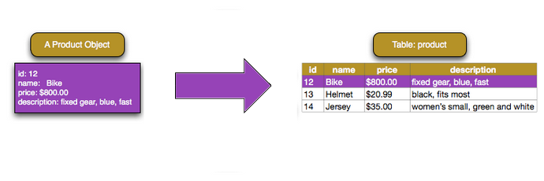
- one-to-many: Representa la relacion entre un elemento dentro de la tabla con varios elementos dentro de otra tabla.
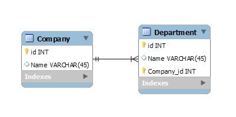
Modelo por subsistemas
Modelo por subsistemas
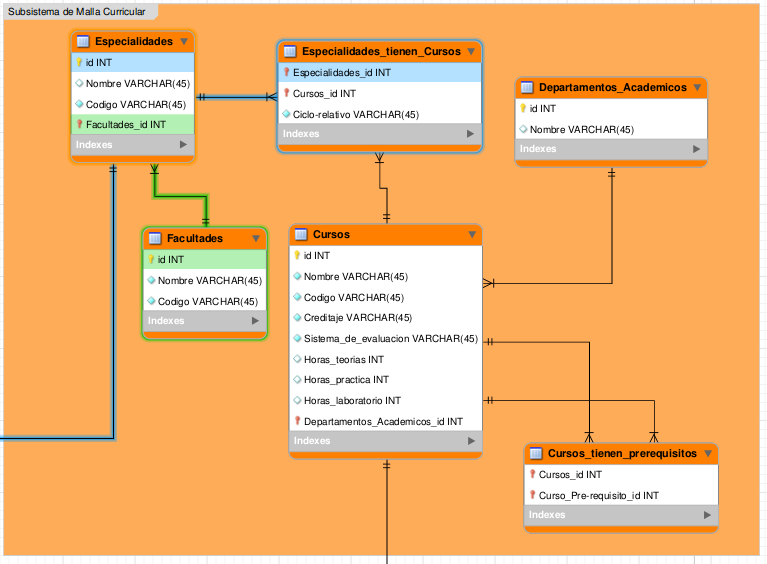
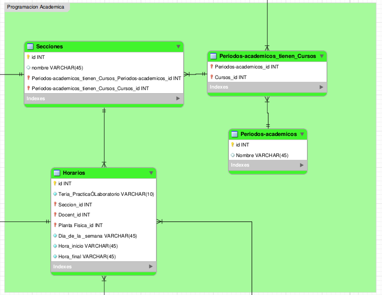
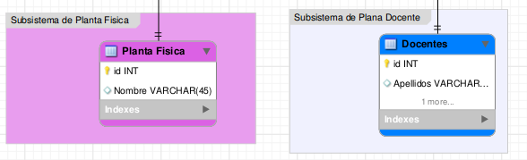
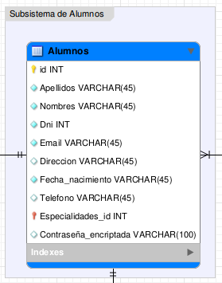
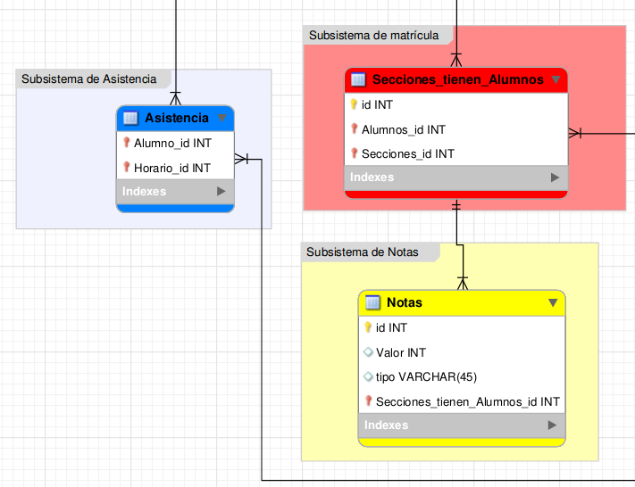
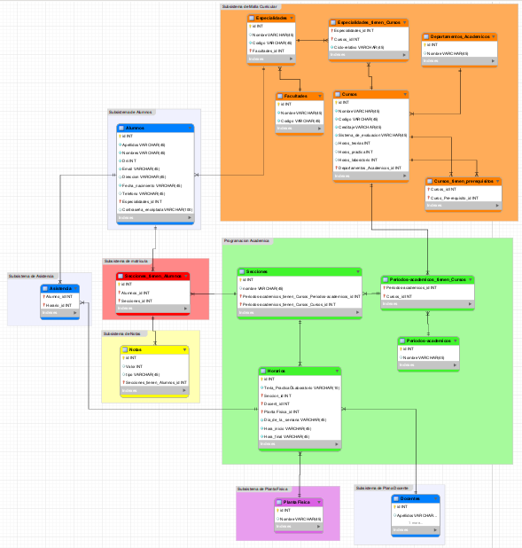
Controladores por subsistemas
Controladores por subsistemas
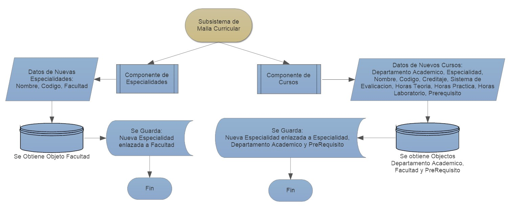
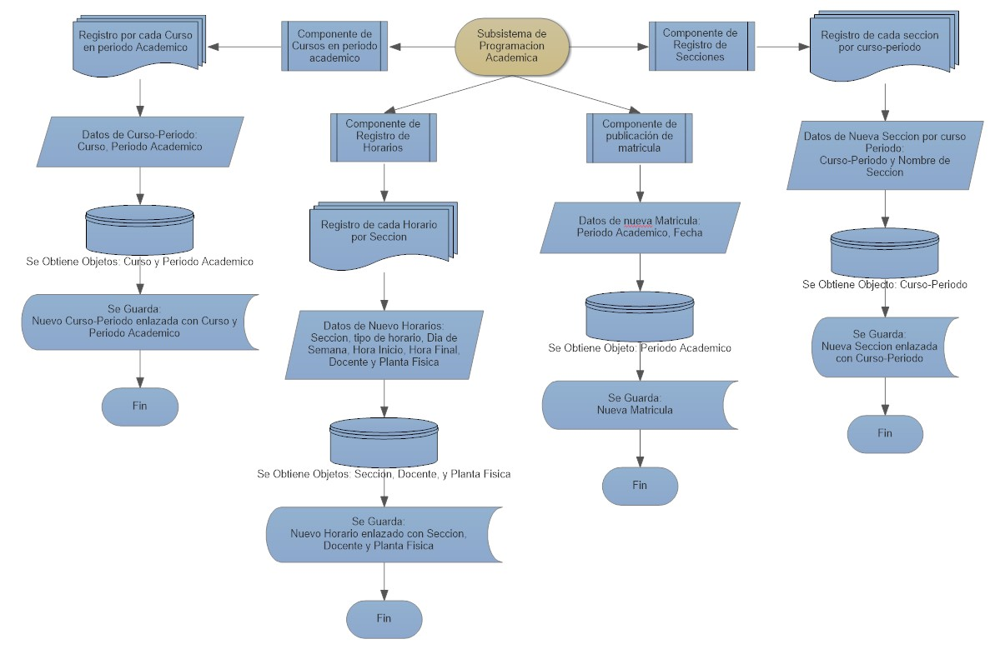
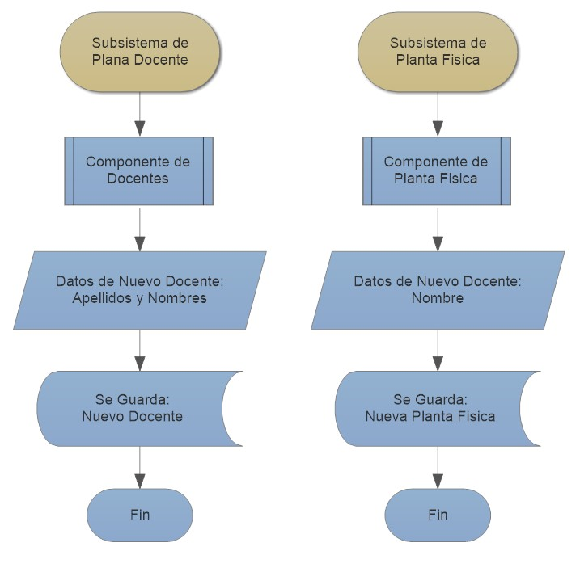
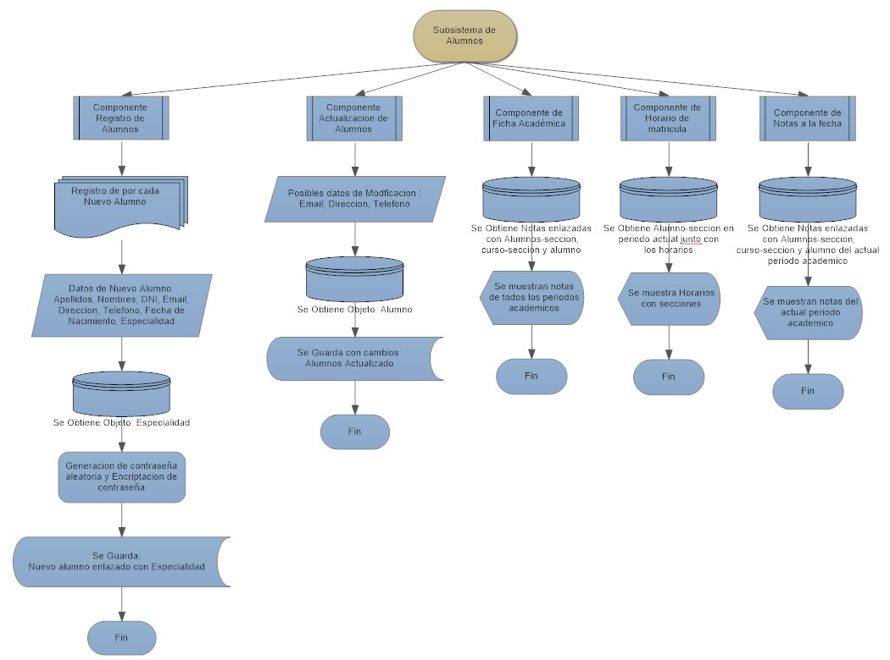
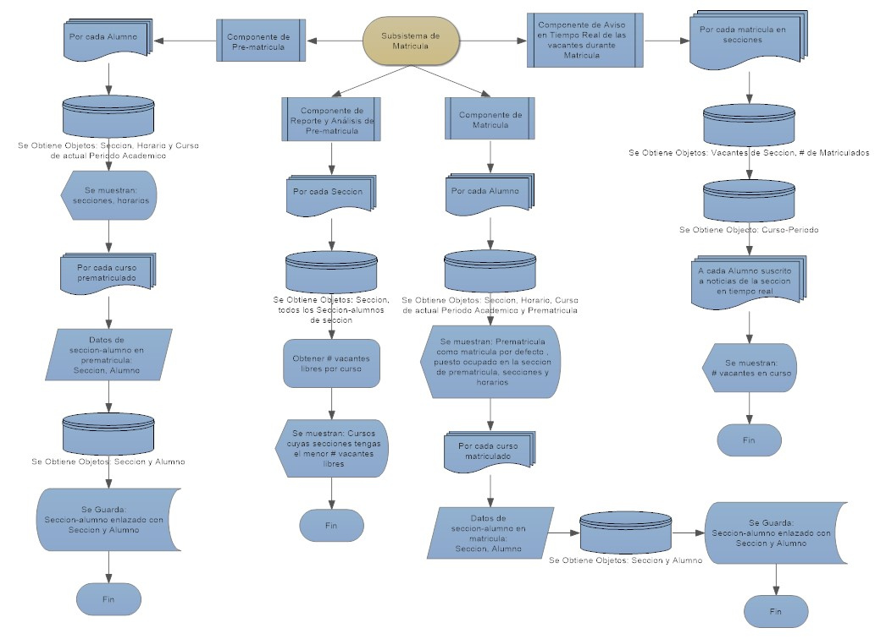
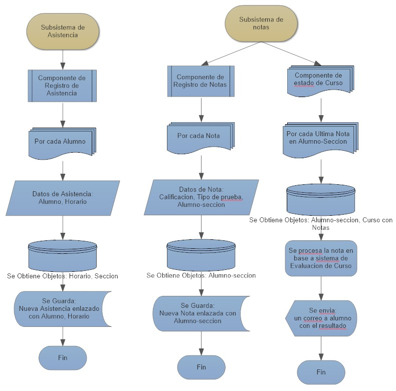
Gracias